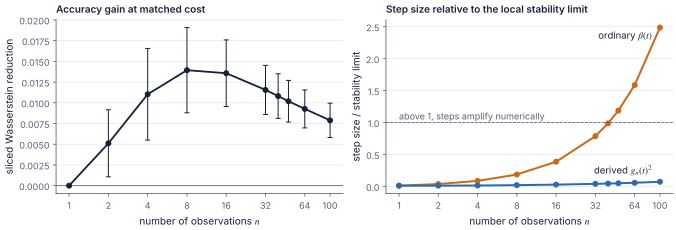
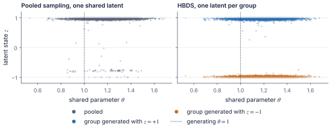
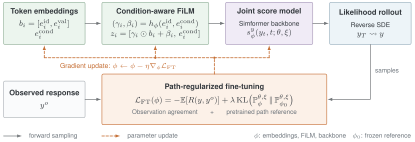
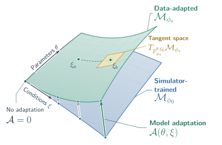
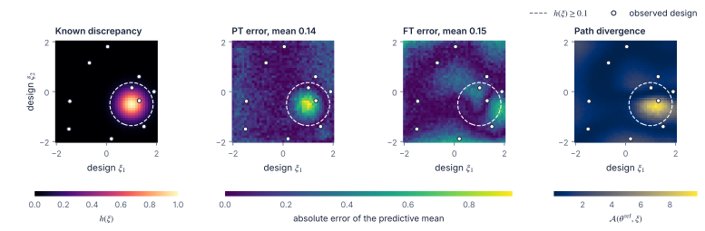
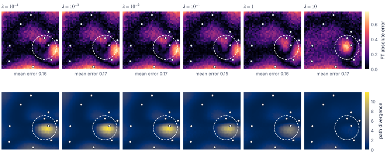
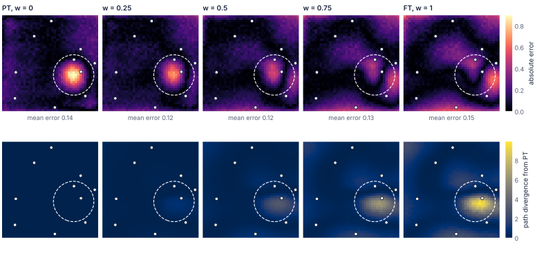
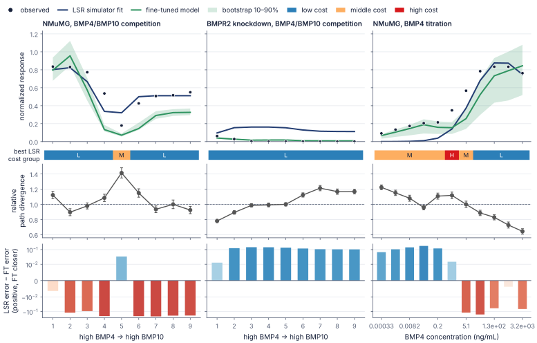
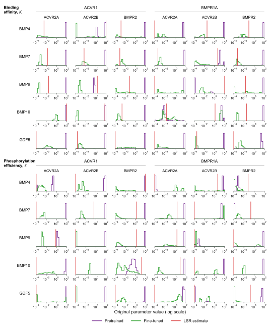
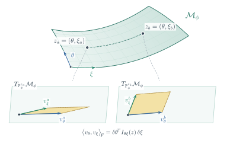

What does the framework do?
We start from a Simformer (Gloeckler et al., 2024), a masked diffusion transformer trained with denoising score matching on simulator draws of parameters \(\theta\), observations \(y\), and experimental designs \(\xi\). Because any subset of variables can be conditioned on, the same network answers posterior queries \(p(\theta\mid y,\xi)\) and likelihood queries \(p(y\mid\theta,\xi)\). Everything below happens after pretraining.
How are many observations combined?
Combine per-observation posterior scores with a diffusion coefficient that depends on how many observations there are.
How is hierarchical structure handled?
Infer shared parameters and group-specific latent states, with the grouping declared only when sampling.
What if the simulator is misspecified?
Fine-tune the likelihood against observations, carry the correction into the posterior, and locate where the model changed.
The application that motivated this combination is a mechanistic model of Bone Morphogenetic Protein (BMP) signaling, where ligands bind pairs of receptors and the resulting complexes drive a transcriptional response.
| Symbol | Meaning in the BMP model | Dimension |
|---|---|---|
| \(\xi\) | Experimental design, the doses of five ligands | 5 |
| \(\theta\) | Binding affinities and phosphorylation efficiencies shared by all cell lines | 60 |
| \(R^k\) | Receptor state of cell line \(k\) | 5 |
| \(y\) | Steady-state SMAD response | 1 |
The diffusion coefficient depends on the number of observations
Under conditional independence, the posterior given \(n\) observations factorizes into single-observation posteriors, so one score network evaluated \(n\) times can stand in for a model trained on the whole set. F-NPSE (Geffner et al., 2023) uses this in discrete time, and its reverse transitions contract as \(n\) grows. We carry that contraction into continuous time by keeping the variance-preserving drift and prescribing a smaller accumulated noise variance, which fixes the diffusion coefficient.
\[ g_n(t)^2=\beta(t)\,\frac{1+(n-1)\bigl(1-\alpha(t)\bigr)^2}{\bigl[1+(n-1)\bigl(1-\alpha(t)\bigr)\bigr]^2} \]
Here \(\alpha(t)\) is the cumulative squared signal retention and \(\beta(t)\) the usual noise rate. One observation recovers the ordinary VP-SDE. With more, the coefficient falls toward \(\beta(t)/n\) at high noise. The resulting sampler, F-NPSE-SDE, needs only score evaluations. It skips the score Jacobians of JAC and the auxiliary covariance estimates of GAUSS (Linhart et al., 2026).
| Method | Gaussian | SLCP | ||
|---|---|---|---|---|
| max-sW ↓ | sW ↓ | MMD ↓ | C2ST → 0.5 | |
| GAUSS | 0.24 ± 0.23 | 0.45 ± 0.18 | 0.05 ± 0.16 | 0.97 ± 0.04 |
| JAC | 0.26 ± 0.22 | 0.53 ± 0.19 | 0.05 ± 0.14 | 0.95 ± 0.05 |
| Langevin | 0.52 ± 0.50 | 0.81 ± 0.28 | 0.13 ± 0.22 | 0.97 ± 0.03 |
| F-NPSE | 0.29 ± 0.24 | 0.83 ± 0.29 | 0.11 ± 0.13 | 0.98 ± 0.03 |
| F-NPSE-SDE, \(L=1\) | 0.29 ± 0.25 | 0.74 ± 0.31 | 0.10 ± 0.15 | 0.98 ± 0.03 |
| F-NPSE-SDE, \(L=5\) | 0.31 ± 0.27 | 0.73 ± 0.28 | 0.10 ± 0.15 | 0.98 ± 0.03 |

HBDS introduces hierarchical structure at sampling time
Pooling every observation into one compositional posterior assumes they all share the same latent variables, and grouped data, such as the receptor states \(R^k\) of the BMP model, break that assumption. Each of the four cell lines has its own \(R^k\), while the biophysical parameters \(\theta\) are common to all of them.
Hierarchical Blockwise Diffusion Sampling (HBDS) keeps one shared parameter state and a separate latent state per group. At every reverse-diffusion time each group state is updated from its own data and the current shared parameters, then the shared parameters are updated from all groups. The pretrained network is reused unchanged, with no hierarchical estimator to train and no need to tokenize the whole dataset.
The toy model below isolates this structure. Each group \(g\) has a sign-valued latent \(z_g\), all groups share one parameter \(\theta\), and \(x_{gi}\) is observation \(i\) in group \(g\).
\[ z_g\sim\mathrm{Rad}\!\left(\tfrac12\right),\qquad \theta\sim\mathcal{N}(0,1),\qquad x_{gi}\mid\theta,z_g\sim\mathcal{N}(5z_g+\theta,\,1). \]
\(\mathrm{Rad}(\tfrac12)\) gives the two signs equal probability, so the two groups sit ten units apart when their signs differ.

Path divergence shows where fine-tuning changed the model
A surrogate trained on simulations inherits the simulator's errors. We adapt it to observed data by sampling responses from the learned likelihood at a fixed reference parameter \(\theta^{\mathrm{ref}}\), scoring them against observations with a negative mean-squared-error reward, and differentiating through the sampler. A path-space KL penalty holds the fine-tuned (FT) model near the pretrained (PT) one.

Fine-tuning changes the law of the whole sampling trajectory, and Girsanov's theorem gives that change in closed form.
\[ \mathcal{A}(\theta,\xi):=\mathrm{KL}\bigl(\mathbb{P}_{\phi}^{\theta,\xi}\,\big\|\,\mathbb{P}_{\phi_0}^{\theta,\xi}\bigr)=\tfrac12\,\mathbb{E}_{\mathbb{P}_{\phi}^{\theta,\xi}}\!\left[\int_0^T g(t)^2\,\bigl\|s_{\phi}^{y}-s_{\phi_0}^{y}\bigr\|_2^2\,dt\right] \]
Evaluated across designs at the reference parameter, \(\mathcal{A}\) is a map of how far the model was moved at each experimental condition. It measures the size of the adaptation and says nothing on its own about whether predictions improved, so we always read it next to predictive error.

| \(\mathcal{A}(\theta,\xi)\) | Error improves | Error does not improve |
|---|---|---|
| Small | Adequate simulator or mild correction | Under-correction |
| Large | Corrected misspecification | Over-correction or forgetting |
Does path divergence find a known discrepancy?
A linear-Gaussian simulator over a two-dimensional design space omits a localized bump \(h(\xi)\) that is present in the observations. We fine-tune on ten noisy observations and compare predictions over the full design grid.

| Metric | PT | FT | Improvement |
|---|---|---|---|
| Posterior \(W_2\) ↓ | 0.09 | 0.07 | 1.35× |
| Posterior mean error ↓ | 0.08 | 0.03 | 2.88× |
| Likelihood RMSE, correctly specified region ↓ | 0.05 | 0.26 | 0.18× |
| Likelihood RMSE, misspecified region ↓ | 0.45 | 0.30 | 1.49× |
Two controls trade correction against preservation. The penalty strength \(\lambda\) acts during training. Autoguidance acts at sampling time and needs no retraining.

Fine-tuning corrects the model near the discrepancy and adds error elsewhere, while the pretrained model does the opposite. Autoguidance (Karras et al., 2024) combines the two during sampling with the score
\[ s_w^{y}=s_{\mathrm{PT}}^{y}+w\,\bigl(s_{\mathrm{FT}}^{y}-s_{\mathrm{PT}}^{y}\bigr), \]
where \(w=0\) recovers the PT model and \(w=1\) the FT model. An intermediate weight keeps the correction near the bump and reduces the error that fine-tuning introduced at designs far from the observations, which lowers error over the whole design grid. Neither model is retrained, and the only added cost is one more score evaluation per sampling step.

Fine-tuning with HBDS improves predictive fit on 940 BMP measurements
We combine fine-tuning with HBDS on 940 measurements from a parent cell line (NMuMG) and three receptor knockdowns. The model has 60 shared biophysical parameters and five receptor quantities per cell line. The fine-tuning reference is the least-squares fit (LSR) that is standard for this model, used as an anchor and not as ground truth.
- Measurements
- 940
- Cell lines
- 4
- Shared parameters
- 60
- Receptor quantities per line
- 5

With parameters held at the reference, FT improves on the simulator throughout the BMPR2-knockdown competition series and at lower BMP4 doses. In the titration those gains generally coincide with larger path divergence. In the NMuMG competition series adaptation often increases error, which is the case the table above labels over-correction.
| Model and sampler | RMSE ↓ | Median distance ↓ |
|---|---|---|
| PT, pooled | 0.58 | 1,594.55 |
| FT, pooled | 0.36 | 66.77 |
| FT without FiLM, pooled | 12.30 | 4,538.82 |
| PT, HBDS | 0.78 | 194.01 |
| FT, HBDS | 0.34 | 14.94 |
| FT without FiLM, HBDS | 0.91 | 274.61 |
We benchmark fine-tuning against the most relevant existing method, Flow Matching Corrected Posterior Estimation (FMCPE). FMCPE trains a neural posterior estimator on simulations and then corrects it with a smaller calibration set, which we build here from LSR fits. It needs a dedicated posterior model and correction flows for each observation set, so every row with a different number of observations below was retrained. The Simformer reuses one set of weights across observation sets through masking and compositional sampling. FMCPE still gives a direct comparison, because both methods can be scored by the same predictive errors through the BMP simulator.
| Method | Observations | LSR fits | RMSE ↓ | Median distance ↓ |
|---|---|---|---|---|
| FMCPE-LSR | 235 | 4,816 | 0.168 ± 0.011 | 136.460 ± 77.855 |
| FMCPE-LSR | 470 | 4,816 | 0.177 ± 0.003 | 31.505 ± 10.206 |
| FMCPE-LSR | 705 | 4,816 | 0.168 ± 0.007 | 50.355 ± 16.256 |
| FMCPE-LSR | 940 | 4,816 | 0.175 ± 0.005 | 31.051 ± 8.460 |
| PT BMP Simformer | 940 | 0 | 0.252 ± 0.003 | 11.111 ± 0.116 |
| FT BMP Simformer | 940 | 1 | 0.245 ± 0.003 | 10.376 ± 0.058 |
Show all 16 FMCPE budget settings
| Observations | LSR fits | RMSE ↓ | Median distance ↓ |
|---|---|---|---|
| 235 | 1,204 | 0.242 ± 0.004 | 203.661 ± 38.307 |
| 235 | 2,408 | 0.231 ± 0.026 | 203.451 ± 70.019 |
| 235 | 3,612 | 0.184 ± 0.010 | 77.887 ± 19.521 |
| 235 | 4,816 | 0.168 ± 0.011 | 136.460 ± 77.855 |
| 470 | 1,204 | 0.256 ± 0.008 | 283.935 ± 26.484 |
| 470 | 2,408 | 0.202 ± 0.006 | 108.803 ± 19.193 |
| 470 | 3,612 | 0.195 ± 0.003 | 154.748 ± 46.537 |
| 470 | 4,816 | 0.177 ± 0.003 | 31.505 ± 10.206 |
| 705 | 1,204 | 0.246 ± 0.003 | 296.322 ± 88.535 |
| 705 | 2,408 | 0.197 ± 0.014 | 161.322 ± 41.237 |
| 705 | 3,612 | 0.193 ± 0.002 | 98.697 ± 18.042 |
| 705 | 4,816 | 0.168 ± 0.007 | 50.355 ± 16.256 |
| 940 | 1,204 | 0.270 ± 0.012 | 203.950 ± 20.409 |
| 940 | 2,408 | 0.210 ± 0.025 | 188.117 ± 73.589 |
| 940 | 3,612 | 0.186 ± 0.023 | 62.011 ± 26.766 |
| 940 | 4,816 | 0.175 ± 0.005 | 31.051 ± 8.460 |
Show the regularization and Langevin-correction sweep
| \(\lambda\) | \(L=0\) | \(L=1\) | \(L=3\) | \(L=5\) |
|---|---|---|---|---|
| \(0\) | 0.29 / 12.16 | 0.36 / 12.96 | 0.36 / 12.97 | 0.36 / 12.97 |
| \(10^{-4}\) | 0.30 / 28.15 | 0.32 / 89.55 | 0.32 / 90.63 | 0.32 / 90.87 |
| \(5\times10^{-4}\) | 0.28 / 14.30 | 0.34 / 14.89 | 0.33 / 14.62 | 0.34 / 14.94 |
| \(10^{-3}\) | 0.34 / 29.97 | 0.36 / 41.20 | 0.36 / 41.36 | 0.36 / 41.86 |
| \(10^{-2}\) | 0.33 / 45.26 | 0.40 / 93.51 | 0.42 / 94.78 | 0.41 / 99.30 |
| \(10^{-1}\) | 0.30 / 52.17 | 0.52 / 157.55 | 0.53 / 153.48 | 0.48 / 159.86 |
| \(1\) | 0.30 / 47.00 | 0.40 / 130.73 | 0.41 / 134.90 | 0.41 / 139.27 |
Likelihood fine-tuning is anchored at a single reference \(\theta^{\mathrm{ref}}\), the LSR fit, so one might expect posterior inference to reduce to that point estimate. It does not. The FT posterior marginals generally shift toward the reference relative to pretraining while retaining substantial spread, which indicates that the likelihood-side correction transfers to posterior queries without collapsing inference onto the fine-tuning anchor.

What does the path-space Fisher metric say about parameters and designs?
Path divergence compares two models at the same \((\theta,\xi)\). The same construction also compares one model with itself at nearby conditioning values. Writing \(z=(\theta,\xi)\), the KL divergence between path laws at \(z\) and \(z+\delta z\) is, to second order, \(\tfrac12\,\delta z^{\top}\mathcal{I}_{\phi}^{\mathrm{path}}(z)\,\delta z\) with
\[ \mathcal{I}_{\phi}^{\mathrm{path}}(z)=\mathbb{E}_{Y\sim\mathbb{P}_{\phi}^{z}}\!\left[\int_0^T g(t)^2\,J_z s_{\phi}^{y}(Y_t,t;z)^{\top}J_z s_{\phi}^{y}(Y_t,t;z)\,dt\right]=\begin{bmatrix} I_{\theta\theta} & I_{\theta\xi}\\ I_{\xi\theta} & I_{\xi\xi}\end{bmatrix}. \]
This is a Fisher metric on the family of path laws \(\mathcal{M}_{\phi}\). It can be singular where the conditioning variables are not locally identifiable, for example when different parameter combinations give indistinguishable responses.

Each block answers a different question.
- \(I_{\theta\theta}\) measures how much the path law changes with the mechanistic parameters at a fixed design. Designs where it is large are locally informative about \(\theta\).
- \(I_{\xi\xi}\) measures how quickly the path law changes across designs. For the pretrained model, large values mark regions where denser simulator coverage would help most.
- \(I_{\theta\xi}\) measures whether a parameter change and a design change have the same first-order effect.
The paper proposes using these blocks to move a population of reference parameters during fine-tuning, to choose designs, and to weight a fine-tuning curriculum. These are proposed extensions. None of them is implemented or tested in the experiments above.
What are the main results?
The compositional schedule needs only score evaluations
An observation-count-aware diffusion coefficient brings F-NPSE into an SDE sampler that costs only score evaluations.
HBDS reuses one pretrained model for any grouping
Blockwise updates over shared and group-specific states reuse one pretrained network for any grouping.
Likelihood fine-tuning transfers to the posterior
Fine-tuning the likelihood at a fixed reference shifts the posterior without reducing it to a point estimate.
Path divergence locates where the model adapted
Path divergence shows where fine-tuning changed the model. Predictive error shows whether the change was a correction.
What are the limitations?
Compositional sampling and HBDS both rely on approximations to intermediate-time posteriors. Fine-tuning at a fixed reference can improve misspecified regions while degrading regions that were already well modeled, and on the BMP data the comparison with the least-squares fit remains mixed. These results point toward adaptation that varies across experimental designs instead of one global regularization strength.
Citation
@article{zaballa2026scalable,
title = {Scalable Diffusion {SBI} for Compositional Inference
under Simulator Misspecification},
author = {Zaballa, Vincent D. and Hui, Elliot E.},
journal = {arXiv preprint arXiv:2609.36950},
year = {2026},
url = {https://arxiv.org/abs/2609.36950}
}
References
- Geffner, T., Papamakarios, G., and Mnih, A. (2023). Compositional score modeling for simulation-based inference. International Conference on Machine Learning, PMLR 202, 11098–11116.
- Gloeckler, M., Deistler, M., Weilbach, C. D., Wood, F., and Macke, J. H. (2024). All-in-one simulation-based inference. International Conference on Machine Learning, PMLR 235, 15735–15766.
- Karras, T., Aittala, M., Kynkäänniemi, T., Lehtinen, J., Aila, T., and Laine, S. (2024). Guiding a diffusion model with a bad version of itself. Advances in Neural Information Processing Systems.
- Linhart, J., Victorino Cardoso, G., Gramfort, A., Le Corff, S., and Rodrigues, P. L. C. (2026). Diffusion posterior sampling for simulation-based inference in tall data settings. Transactions on Machine Learning Research.
- Ruhlmann, P.-L., Arbel, M., Forbes, F., and Rodrigues, P. L. C. (2026). Flow matching calibration for simulation-based inference under model misspecification. International Conference on Machine Learning.